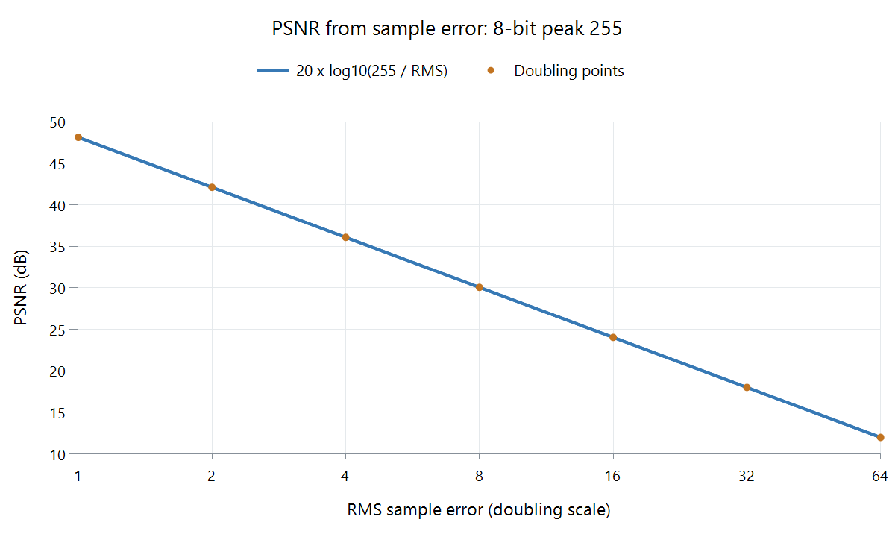

Peak Signal-to-Noise Ratio (PSNR) for Video
PSNR expresses decoded sample error relative to a declared peak value using a logarithmic decibel scale.
Start with four 8-bit grayscale sample values in a reference picture and the corresponding four values in a test picture:
| Position | Reference | Test | Difference | Squared difference |
|---|---|---|---|---|
| 1 | 50 | 52 | +2 | 4 |
| 2 | 100 | 98 | −2 | 4 |
| 3 | 150 | 153 | +3 | 9 |
| 4 | 200 | 196 | −4 | 16 |
The squared differences total 33. Dividing by four gives the mean squared error, MSE =8.25. Its square root is the RMS error, approximately 2.8723 sample units.
Peak signal-to-noise ratio (PSNR) expresses this error relative to a declared peak using a logarithmic scale.
Convert the sample error to decibels
For this example, choose peak =255, the maximum code value of an 8-bit sample:
PSNR = 10 × log10(peak² /MSE)
So:
10 × log10(255² /8.25) = 38.9663 dB, approximately 38.97 dB.
The peak is the declared sample-format convention, not the brightest observed reference value, which happened to be 200. Selecting a different peak changes the score even if every error remains the same.
Original paired-sample calculation for one plane. It is not a measured video encode.
Why doubling RMS error lowers PSNR by 6 dB

Calculated curve for one plane, peak 255, and positive RMS error; no encoder benchmark or perceptual threshold is implied.
| RMS error in this convention | PSNR |
|---|---|
| 1 | 48.13 dB |
| 2 | 42.11 dB |
| 4 | 36.09 dB |
| 8 | 30.07 dB |
Doubling RMS error multiplies MSE by four. Its PSNR change is 10 × log10(4) ≈6.02 dB downward.
With zero sample error, the mathematical value is infinite. That establishes exact equality of the compared sample arrays. Their file bytes, metadata and earlier source history are separate observations.
The statistic records energy, not location
One four-sample error pattern could be +2,+2,+2,+2: a uniform offset. Another could be +4,0,0,0: a localized error. Both have MSE 4 and the same PSNR.
Their distribution differs. In an image, a change on a sharp outline can be noticed differently from error spread across a smooth region. PSNR averages squared magnitudes and does not describe that placement or local structural relationship.
SSIM develops a different comparison using local picture statistics.
Aggregate the quantity you intend
Suppose two equally sized frames have MSE values 1 and 100, using peak 255.
Pool their squared errors first:
mean MSE =(1 +100)/2 =50.5.
The resulting PSNR is 31.10 dB.
Average their separately calculated frame PSNR values instead:
(48.13 +28.13)/2 =38.13 dB.
These are different calculations because the logarithm is nonlinear. The score's aggregation rule therefore belongs with its reported number. FFmpeg's PSNR filter documents accumulation/averaging of MSE before calculating its aggregate.
Prepare corresponding pictures
A valid conversion comparison needs corresponding content at corresponding times, with a declared geometry, sample format and peak convention. A shifted crop, a one-picture offset or an unintended range conversion can measure those changes rather than the encoder's reconstruction error.
For an Emby derivative, compare the actual delivered reconstruction with the selected retained source after the intended common preparation. Record the compared span and plane handling as well as the aggregate. The calculation then tells you which sample error the reported decibels represent.
See Also
- Structural Similarity (SSIM) for Video
- VMAF Video Quality Metric
- Video Quantization Parameter (QP)
- Video Generation Loss